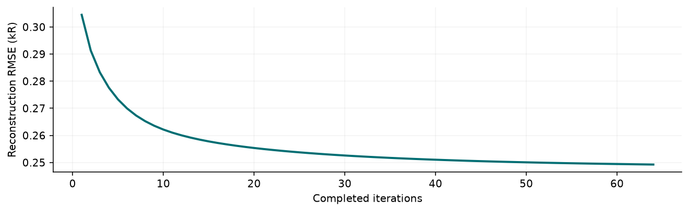
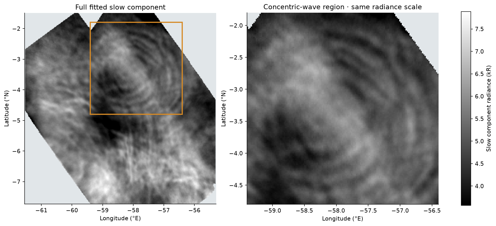
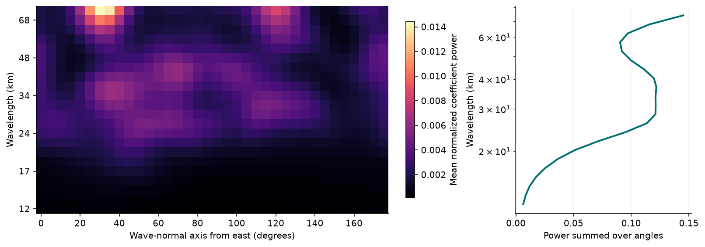
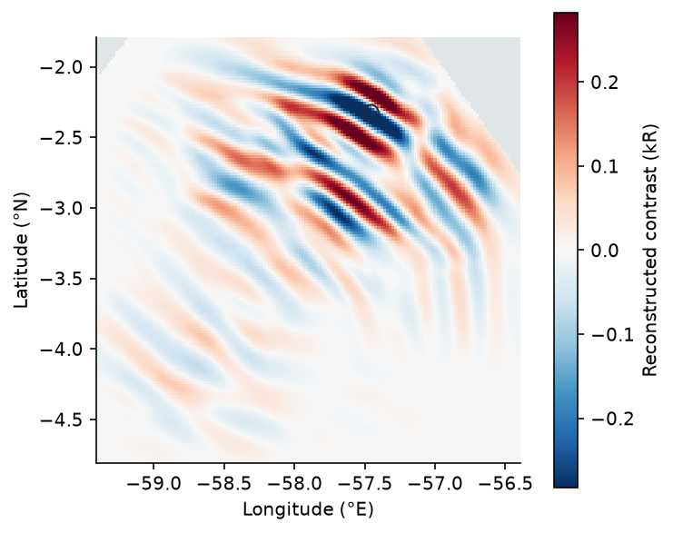
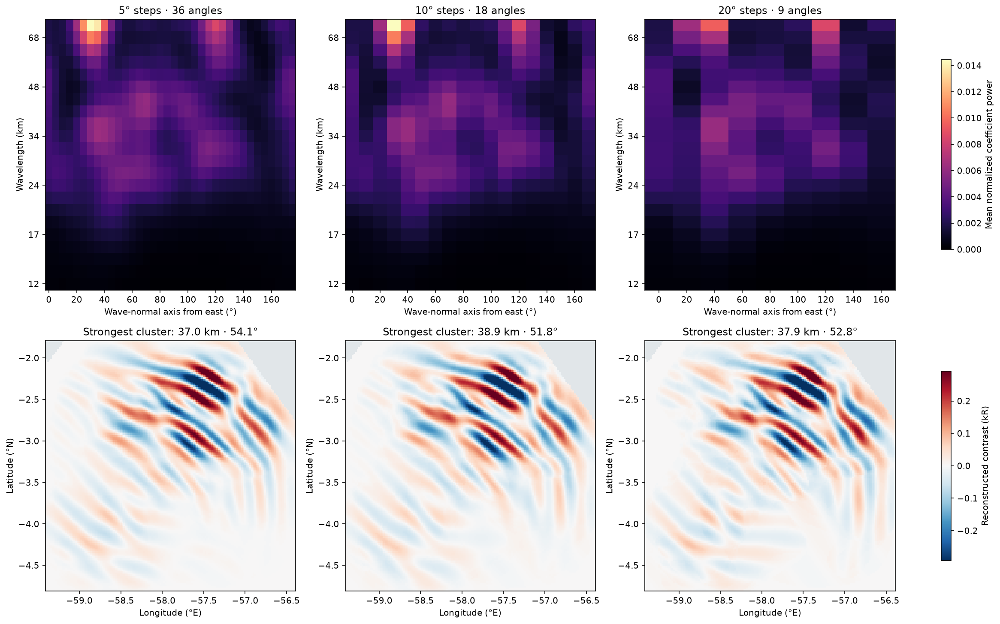
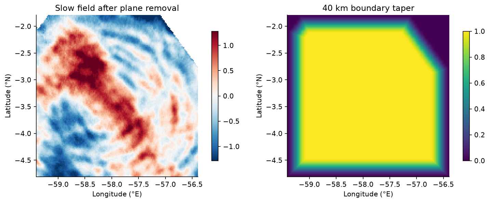

Observed
L1R, projected3.577.89 kR
Follow the observed frames through slow/fast layer separation, then inspect the spatial wave patterns in the fitted slow field.
23 November 2023 · 85 km reference altitudeL1R source · standalone reportAll panels share a fixed geographic grid. Move through 05:23:13.023–05:24:06.925 UTC; the reference frame opens first. Observed and slow panels share a radiance scale. Gray marks missing data.
North is up; east is right. Longitude -61.54 to -55.30°E; latitude -7.72 to -1.50°N. Display scales are fixed across the sequence; extreme values are clipped for display only. Playback uses a constant display interval; the fit uses the actual source timestamps.
The original AWE_v02_actual_data notebook’s alternating-median method, run afresh for this interval. Each iteration estimates the fast template after subtracting slow, then updates slow after subtracting fast.

Reconstruction RMSE from iteration 1 to 64, over the same 10,492 pixels in every frame.
A crop of the numerical slow component shown in the frame player, at reference frame 1467. The gold rectangle locates the crop; both panels use the same radiance scale. The wavelet results below are computed on this crop alone. Plane removal, normalization and boundary tapering are recomputed within the crop before the transform.

juwavelet’s 2-D Morlet transform, applied only to the concentric-wave crop at 05:23:40.527 UTC: 59.4–56.4°W and 4.8–1.8°S. All finite fitted slow values inside this crop are used; intrinsic missing values remain missing. The search spans 12–74.0 km (strictly below 80 km), using 22 wavelength scales and 5° wave-normal angle steps. The cluster inclusion threshold is 0.05 (previously 0.10), with minimum peak amplitude 0.25. The panels below reconstruct the strongest coefficient clusters.

Power is averaged over the tapered cropped grid after normalization. Angles describe the wave-normal axis counterclockwise from east, modulo 180°. A single frame does not determine propagation direction or speed.
Amplitude-weighted cluster estimates

Peak coefficient at 28.5 km / 60°. Peak is 60 km from the nearest missing-data edge.
The same 151 × 151 crop, 22 wavelength scales (12–74.0 km), 0.25 minimum peak amplitude, and 0.05 cluster threshold. Only the angular sampling changes: 5°, 10°, and 20°. The original 5° results above remain as the baseline.

| Step | Angles | Clusters | Spatial footprint* | Weighted wavelength / axis |
|---|---|---|---|---|
| 5° | 36 | 1 | 21,232 | 37.0 km / 54.1° |
| 10° | 18 | 1 | 21,282 | 38.9 km / 51.8° |
| 20° | 9 | 1 | 20,332 | 37.9 km / 52.8° |
*Union of spatial grid pixels assigned to any cluster, before restricting displayed maps to finite slow values. Coefficient counts are not directly comparable across different numbers of angles. Top panels share one power scale; bottom panels share one contrast scale and show the strongest cluster per run.
Weighted axes can fall between sampled angles. Coarser angular sampling may merge or miss directional structure; a larger footprint alone does not establish a better physical wave estimate.

A plane is removed from the cropped slow field; a cosine taper rises from zero to one over 40 km from missing-data edges. The transform uses local geographic kilometre spacing and the numerical radiance arrays, not rendered images.
Source: awe_l1r_q20_2023327T0456_00019_v02.nc. Frames 1442–1491, centered on 1467. All original Epoch values are retained; no frame is inserted. Radiance is linearly interpolated onto a 0.02° latitude–longitude grid with missing-radiance vertices preserved.
Motion estimation uses the existing notebook’s patch matching and thresholds. Templates require 10 usable frames; previous template values remain where an update lacks support. The wavelet analysis uses every finite pixel within the selected concentric-wave crop, including retained template values. No additional observed-frame or support-count mask is applied. Intrinsic NaNs remain missing; these fitted values do not restore masked detector measurements.
UTC follows the AWE processing code’s GPS anchor (1356566418 = 2023-01-01 00:00:00 UTC). Original source date labels are not used to interpolate frame times.
This local 64-iteration fit is separate from the whole-orbit 32-iteration model-selection run. It uses all frames and a geographic grid, so the two results need not be identical.
{
"fit": {
"orbit": 19,
"requested_utc": "2023-11-23T05:23:40.000Z",
"reference_frame": 1467,
"reference_utc": "2023-11-23T05:23:40.527Z",
"first_frame": 1442,
"last_frame": 1491,
"first_utc": "2023-11-23T05:23:13.023Z",
"last_utc": "2023-11-23T05:24:06.925Z",
"frames": 50,
"duration_seconds": 53.90234375,
"epochs": [
1384752211.0234375,
1384752212.125,
1384752213.2226562,
1384752214.3242188,
1384752215.4257812,
1384752216.5234375,
1384752217.625,
1384752218.7265625,
1384752219.8242188,
1384752220.9257812,
1384752222.0234375,
1384752223.125,
1384752224.2265625,
1384752225.3242188,
1384752226.4257812,
1384752227.5234375,
1384752228.625,
1384752229.7265625,
1384752230.8242188,
1384752231.9257812,
1384752233.0273438,
1384752234.125,
1384752235.2265625,
1384752236.3242188,
1384752237.4257812,
1384752238.5273438,
1384752239.625,
1384752240.7265625,
1384752241.8242188,
1384752242.9257812,
1384752244.0273438,
1384752245.125,
1384752246.2265625,
1384752247.328125,
1384752248.4257812,
1384752249.5273438,
1384752250.625,
1384752251.7265625,
1384752252.828125,
1384752253.9257812,
1384752255.0273438,
1384752256.1289062,
1384752257.2265625,
1384752258.328125,
1384752259.4257812,
1384752260.5273438,
1384752261.6289062,
1384752262.7265625,
1384752263.828125,
1384752264.9257812
],
"utc": [
"2023-11-23T05:23:13.023Z",
"2023-11-23T05:23:14.125Z",
"2023-11-23T05:23:15.222Z",
"2023-11-23T05:23:16.324Z",
"2023-11-23T05:23:17.425Z",
"2023-11-23T05:23:18.523Z",
"2023-11-23T05:23:19.625Z",
"2023-11-23T05:23:20.726Z",
"2023-11-23T05:23:21.824Z",
"2023-11-23T05:23:22.925Z",
"2023-11-23T05:23:24.023Z",
"2023-11-23T05:23:25.125Z",
"2023-11-23T05:23:26.226Z",
"2023-11-23T05:23:27.324Z",
"2023-11-23T05:23:28.425Z",
"2023-11-23T05:23:29.523Z",
"2023-11-23T05:23:30.625Z",
"2023-11-23T05:23:31.726Z",
"2023-11-23T05:23:32.824Z",
"2023-11-23T05:23:33.925Z",
"2023-11-23T05:23:35.027Z",
"2023-11-23T05:23:36.125Z",
"2023-11-23T05:23:37.226Z",
"2023-11-23T05:23:38.324Z",
"2023-11-23T05:23:39.425Z",
"2023-11-23T05:23:40.527Z",
"2023-11-23T05:23:41.625Z",
"2023-11-23T05:23:42.726Z",
"2023-11-23T05:23:43.824Z",
"2023-11-23T05:23:44.925Z",
"2023-11-23T05:23:46.027Z",
"2023-11-23T05:23:47.125Z",
"2023-11-23T05:23:48.226Z",
"2023-11-23T05:23:49.328Z",
"2023-11-23T05:23:50.425Z",
"2023-11-23T05:23:51.527Z",
"2023-11-23T05:23:52.625Z",
"2023-11-23T05:23:53.726Z",
"2023-11-23T05:23:54.828Z",
"2023-11-23T05:23:55.925Z",
"2023-11-23T05:23:57.027Z",
"2023-11-23T05:23:58.128Z",
"2023-11-23T05:23:59.226Z",
"2023-11-23T05:24:00.328Z",
"2023-11-23T05:24:01.425Z",
"2023-11-23T05:24:02.527Z",
"2023-11-23T05:24:03.628Z",
"2023-11-23T05:24:04.726Z",
"2023-11-23T05:24:05.828Z",
"2023-11-23T05:24:06.925Z"
],
"source": "E:\\soc\\l1r\\2023\\11\\awe_l1r_q20_2023327T0456_00019_v02.nc",
"source_size": 818857821,
"source_mtime_ns": 1792789198954221100,
"reference_altitude_km": 85,
"grid_shape": [
312,
313
],
"grid_step_degrees": 0.02,
"slow_velocity_pixels_per_s": [
0.0012825284122046693,
0.014645014755246105
],
"fast_velocity_pixels_per_s": [
0.31960842501500397,
-0.46306949701386496
],
"slow_peak_support": 102,
"fast_peak_support": 81,
"slow_median_ncc": 0.44488970934357075,
"fast_median_ncc": 0.6332334374268687,
"iterations": 64,
"initial_rmse_kR": 0.3044937799532664,
"final_rmse_kR": 0.24924112997253986,
"evaluation_pixels_per_frame": 10492,
"notebook_sha256": "f38c2856327180f3c179ddf461214e278d1b0588cd1354eed3362830a044ce95",
"method": "Same matching and 64-iteration alternating-median fit as the original v02 notebook. Fresh velocities. All 50 frames fit; no heldout validation. Minimum 10-frame template support; retain prior template where updates lack support; fast median fixed to zero.",
"projection": "0.02-degree latitude/longitude grid covering the reference frame. Linear interpolation retains NaN radiance vertices. No temporal interpolation.",
"utc_conversion": "AWE processing-code anchor: GPS Epoch 1356566418 = 2023-01-01T00:00:00 UTC; GPS-UTC = 18 s for this acquisition."
},
"wavelet": {
"source": "Concentric-wave crop of fitted slow component, frame 1467 at iteration 64",
"footprint": "all_finite_slow",
"finite_pixels": 21854,
"missing_pixels": 947,
"clusters": [
{
"rank": 1,
"peak_normalized_amplitude": 0.2616938054561615,
"weighted_wavelength_km": 36.96869650553953,
"selected_coefficients": 962679,
"spatial_pixels": 21232,
"wave_normal_axis_degrees": 54.08311049932669,
"peak_wavelength_km": 28.540970760065306,
"peak_axis_degrees": 59.99999999999999,
"peak_longitude": -57.46,
"peak_latitude": -2.32,
"peak_edge_distance_km": 60.04526038806172,
"search_edge": false
}
],
"cluster_expansion": {
"baseline": {
"threshold": 0.1,
"clusters": 1,
"selected_coefficients": 199224,
"spatial_pixels": 9008
},
"selected_coefficients": 962679,
"spatial_pixels": 21232
},
"settings": {
"min_wavelength_km": 12.0,
"max_wavelength_km": 74.02611961958115,
"scale_step_octaves": 0.125,
"angle_step_degrees": 5,
"dx_km": 2.220210901291848,
"dy_km": 2.223898532891175,
"taper_km": 40,
"min_amplitude": 0.25,
"cluster_threshold": 0.05,
"max_wavelength_exclusive_km": 80.0,
"wavelength_steps": 22,
"angle_steps": 36,
"mode": "scaled",
"normalization_std_kR": 0.6023914492224947
},
"checks": [
"Synthetic 48 km / 30 degree wave recovered within scale and angle resolution"
],
"transform_sha256": "226aa342c42ffc932dccf95fbd8eb3dc815e3e314cb96a494777d057606f4b3b",
"notes": "Plane removed; cosine taper over 40 km from missing-data edges; zero outside valid footprint for FFT. Up to four strongest coefficient clusters, not significance-tested independent waves. Wavelength uses local geographic spacing. Axis is wave normal counterclockwise from east modulo 180 degrees; no travel direction or speed inferred.",
"crop_bounds": {
"longitude": [
-59.4,
-56.4
],
"latitude": [
-4.8,
-1.8
]
},
"input_shape": [
151,
151
],
"analysis_scope": "Crop only; plane removal, edge taper and normalization computed on the crop before juwavelet."
}
}